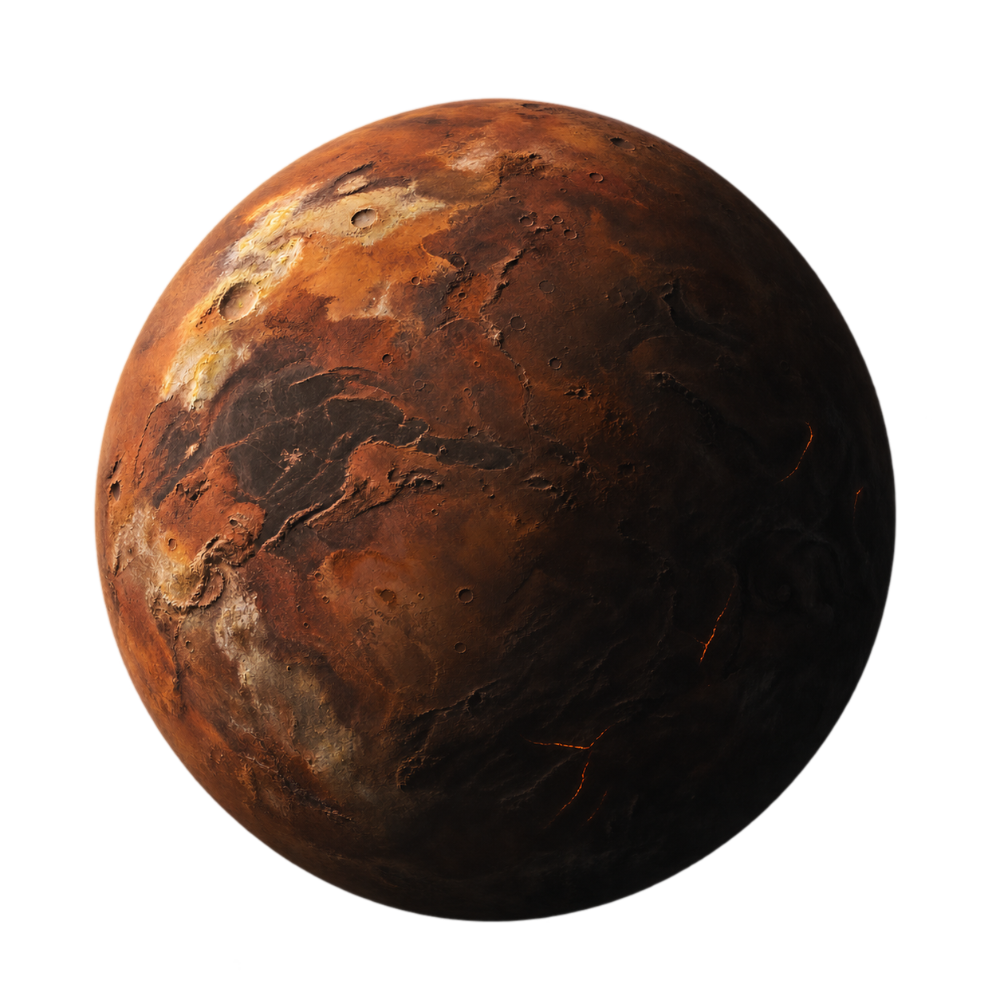
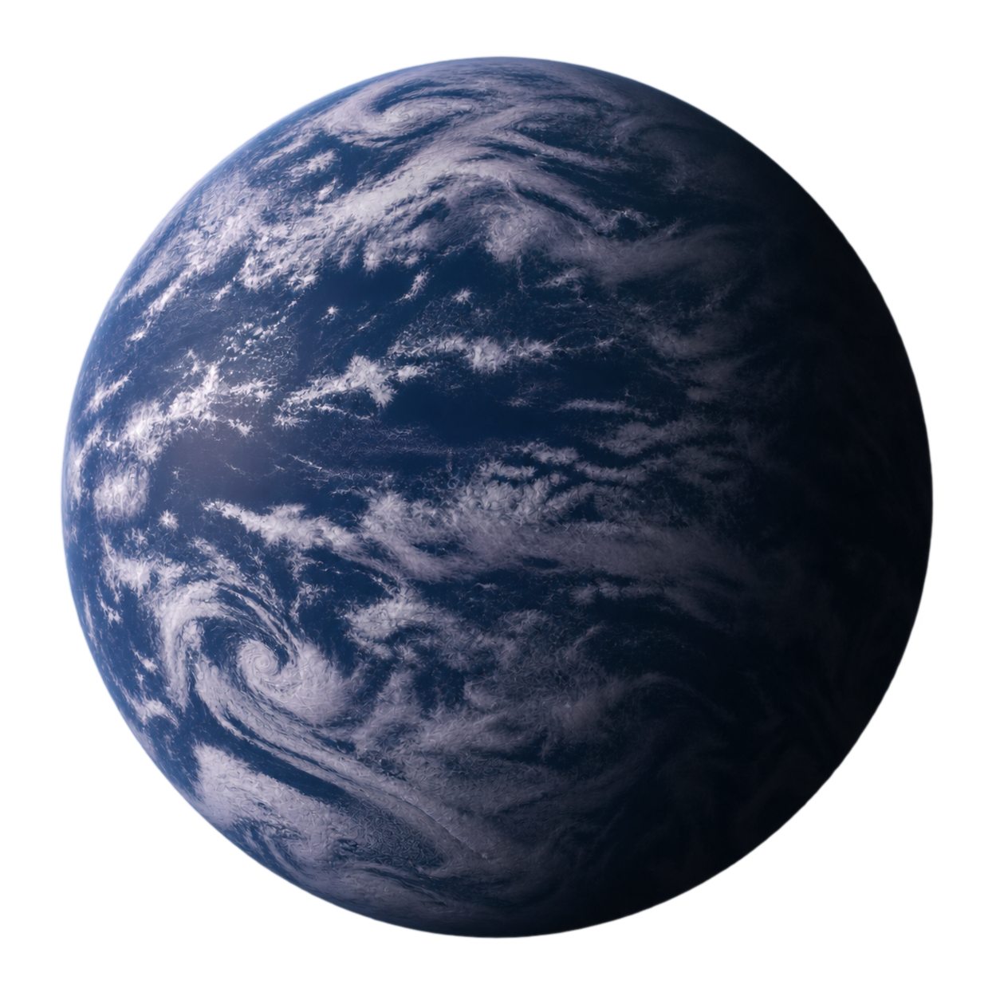
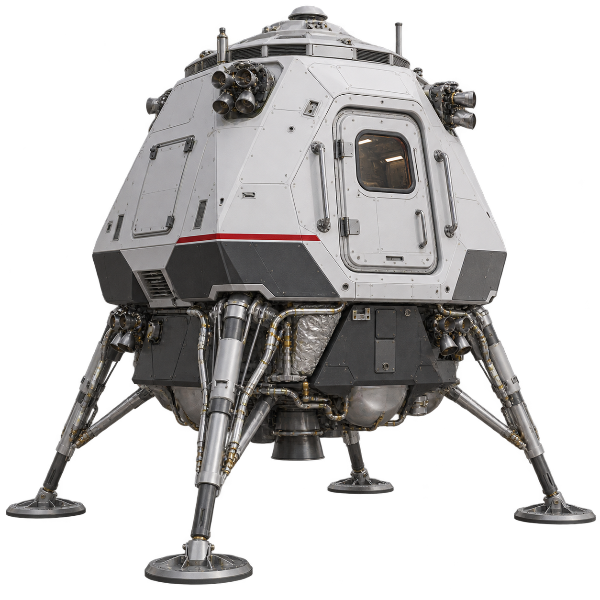

1420.0
1420.0MHz tuned
12%Confidence
37Flagged today
Listen
Move across the scope to tune the receiver. Find the hydrogen line, then click or press Enter to lock it.


The final frontier is not empty — it's waiting to be read.
ExploreSelect a world, drag the planet, or use ← → keys
Every world we've charted and every machine that carried us there. Drag, swipe or use the arrows to turn the collection.
Every world in the catalogue passes through the same three gates before a single boot touches its surface. Each instrument below is live: tune it, probe it, fly it.
Move across the scope to tune the receiver. Find the hydrogen line, then click or press Enter to lock it.
Visible light: cloud bands and storm systems, 0.4–0.7 µm. Hover the planet to sample it.

ALT 120.0 km V 1.84 km/sDrag the slider to fly the descent yourself, or replay the automated landing.
Four confirmed anomalies beyond Kaelen-IV, our home survey world. Hover to preview, open to read the full field notes.
A vast ocean world cloaked in violet cloud bands, tracing a figure-eight orbit around twin suns.
Discovered during the second sweep of the Nexus Deep Field Survey, Azura-7b defies every conventional planetary model. Its upper atmosphere — saturated with ammonia halos and crystalline water vapour lattices — scatters stellar radiation into a violet shimmer observable even at interstellar range. It completes one dual-star cycle every 847 standard days without orbital decay.
Eleven planetary bodies drifting in loose formation through the void — no star, no orbit, no anchor.
The largest known cluster of rogue planetary-mass objects ever catalogued. Bodies from sub-Neptune to near-Jovian scale travel together, generating enough residual tidal heat to keep liquid water beneath their frozen crusts. What ejected them — and why they hold such precise formation — has no accepted explanation.
Crystalline spires forty kilometres tall, under a sky lit by three suns at once.
Sorel Prime holds the innermost stable orbit within a trinary system, bathed in shifting spectral colour through its 19-day year. Sub-surface pressure events have raised continent-spanning fields of silicate formations — the tallest measured at 43.7 km. Whether they are inert or part of a mineral respiration cycle defines the mission.

So saturated with pre-biotic compounds it may be seeding eleven star systems with life's raw materials.
Spanning roughly 340 light-years, the Nythari Veil is unlike any nebula previously charted. Spectroscopic passes revealed forty-seven distinct pre-biotic compounds — amino acid precursors, nucleobase analogues and long-chain carbon scaffolds — distributed uniformly through the cloud.
Scroll to travel the mission log — from the first beep in orbit to the first step on Kaelen-IV.
The first artificial satellite beeps from orbit. The space age begins with a sound.
Two humans walk on the Moon. Exploration stops being a dream and becomes a schedule.
An eye above the atmosphere rewrites the scale of the universe, one deep field at a time.
Infrared sight reaches the first light — and starts reading the air of distant worlds.
The Nexus survey confirms a figure-eight ocean world orbiting twin suns.
Forty-seven pre-biotic compounds detected in one cloud. The seed-cloud debate begins.
A lone astronaut steps into the crimson grass of Kaelen-IV. The catalogue gets its first visitor.
Mission telemetry from the survey fleet. Hover any readout for detail, click to switch units or pin a view.
Hover a crew member for role and shift.
Next · Relay sync in 0.4 sol
Every signal we dismiss as noise may be someone else's language.